SERVER FRAMEWORK
Node.js 기반 분산 서버 프레임워크
Node.js · WebSocket · RPC 기반 개발 및 게임 서버 적용
SENIOR SOFTWARE ARCHITECT / HANDS-ON TECH LEAD
게임 서버 · 서비스 플랫폼 · AI 기반 통합 개발
아키텍처 의사결정부터 직접 구현, 시스템 연동, 테스트와 운영까지
PROFESSIONAL PROFILE
C++, Node.js 기반 분산 게임 서버 구현, 웹 서비스, AI 활용 개발·운영 실무 아키텍트
SERVER FRAMEWORK
Node.js · WebSocket · RPC 기반 개발 및 게임 서버 적용
ARCHITECTURE
네트워크 구조 분리, 확장성·성능·변경 대응
IMPLEMENTATION
게임 서버, Web/API, DB, 클라이언트 연동
OPERATIONS
Linux · AWS · 배포 · DB 튜닝 및 운영툴
AI ENGINEERING
코딩 에이전트 · IDE 디버깅 · 로컬 AI 통합
인력 구성 · 개발 생산성 · 유지보수 · 운영비용 · 서비스 변화 대응
CURRENT ENGINEERING
2022.03–현재 · 게임 서버 개발 팀장 / 서버·DB·클라우드 실무 병행
프레임워크를 직접 설계·개발하고, 반복적인 서비스 전환을 1인 개발 체계로 대응
AI-ASSISTED DEVELOPMENT
AI 코딩 에이전트로 빠른 MVP 모델 구현, 기획 변경 반복, 개발툴 기반 디버깅으로 완성도를 검증
01
기획서 검토 중심에서 요구분석-데모구현 중심으로 전환
초기 아키텍처, 기반 기술의 신중한 결정의 중요성
02
Codex · Claude Code, Antigravity 등 교차 체크 활용. AI 에이전트 효율적 작업 관리로 대규모 프로젝트 일관성 유지 다수 개발 랭귀지에 대한 기초 학습으로 사용 언어 제한 극복
03
GUI 테스트 툴을 제작해 기능을 즉시 검증하고 서비스 완성도를 높임
AI 에이전트가 같은 실수를 반복할 때는 전통적인 디버깅 방법을 활용
운영, 보안, 인프라 설계에 기존 서비스 경험 반영
04
웹·서버·DB·AI 연동, 배포 구성 및 출시 준비 단계 검증. DevOps 경험 적용, 클라우드 서비스로 운영 자동화 극대화
Ai Projects A
임베딩 · 경량 LLM · 의사결정 모델을 실제 서비스의 데이터·로직 계층과 연결
게임 NPC 의사결정
게임 엔티티 상태·속성·환경 제약에 따라 자율 행동과 동적 결과를 결정하는 구조를 실험
게임 AI / NPC & 건물 등의 조건·상태 기반 다양한 동적 전개, 로컬 PC용 AI
자연어 채용 매칭
채용 공고 수집·정규화 및 키워드 선별 후 자연어 요청 임베딩 AI 유사도 매칭 매칭을 구현
검색 / SQLite·임베딩·LLM API
AI 토지 검색
토지 분산 매물의 수집·저장과 자연어 질의를 구조적 검색 조건으로 변환하는 기능 개발
웹 스크래핑 (AI 도입 전) / 자연어 검색 / DB
공통 기반: Nodejs, Rust, Ollama-cpp, 로컬 모델 실행, Embeddinggemma-2, Qwen3-Embedding, TF
Ai Projects B
네트워크 게임 구현, 동적 세계 생성, 심리스 월드, 콘텐츠 도구 제작과 플랫폼 확장 실험
무한 우주 항해·채굴·탐사·전투 / 위치·Seed 기반 월드 확정 / 웹 기반 성능 검증
월드 구조 생성·편집 / 2D 이미지 기반 2.5D 지형 자동 생성 파이프라인
지뢰찾기 규칙을 결합한 러닝 게임 / 게임 모드·진행 구조·클라이언트 로직 설계
실시간 네트워크 배틀 / WebSocket 동기화 및 서비스 구조·플랫폼 연동 실험
공통 기반 | Node.js · TypeScript · Linux · HTML5, Canvas, Tauri
Ai Projects C
설계·구현·DB·API·배포를 연결하는 소규모 독립 개발 실험
위치 기반 취향 등록 & 소셜 네트워킹
Next.js / NestJS
현장 사진 실시간 공유, 커뮤니티
Remix / 웹서비스
익명 위치 기반 소셜 서비스
위치·백엔드 로직
원격 영상 P2P 실시간 스트리밍
실시간 미디어 전송
카레라 영상 처리, AI 학습 유틸리티
AI 응용·유틸리티
공통 기반 | Node.js · TypeScript · Linux · PM2 · Docker · Cloudflare · GitHub Actions
SELECTED CAREER & PROJECTS
대형 게임사 · 창업 · 중견/스타트업 | 1999–2026 주요 실무 경력
| 회사 / 조직 | 대표 프로젝트 | 핵심 역할 |
|---|---|---|
| 네오위즈 | 보드게임 서버, CGS · VNA · FPS PMS | C++ 분산 서버, IOCP·네트워크 라이브러리 |
| 웹젠 | 온라인게임, WOPS 서비스 | 인증·빌링·DB 통합 서비스 플랫폼 개발 리딩, 서버 개발 |
| KTH | 온라인 게임, 유무선 서비스 플랫폼 | 온라인·모바일·IPTV 통합 및 플랫폼 개발, 서비스 런칭 |
| 스마일게이트 | 게임 통합 Echo-Platform | 웹·게임 플랫폼 및 기술 조직 리딩, 플랫폼 설계 |
| 위메이드 | 스마트 게임 플랫폼 | 게임 플랫폼·카카오톡 연동 설계, 기술 조직 리딩 |
| 마이리그 | 게임 전적·매칭 웹서비스 | LOL 로그 데이터 수집·백엔드·DB 개발, 튜닝 |
| 지피엠 | 온라인 게임 서비스 | 온라인 게임 서버 개발, AI/AR 연동·AWS 운영 |
| 프리즘넷 | 글로벌 모바일 게임 플랫폼 | Unity 기반 모바일 게임 서비스 및 해외 런칭 기술 리딩 |
| 시현소프트, 파이온 | 모바일 게임, AI 콘텐츠 · IoT 장치 | 게임 개발·출시·정부 과제, 외주 개발 |
| 현재 | MMO 게임 서버, 서비스, 서버 운영 | 네트워크 전용서버, 지원용 툴, 배포 관리, AWS, 사내서버 셋팅&관리 |
ENGINEERING BREADTH
소프트웨어 시스템을 센서·디바이스·실물 시제품까지 확장한 엔지니어링 경험
센서&디바이스 시제품 · AI 응용 동작&자세 분석 Lib · 공장자동화&인터넷 품질 측정 솔루션
교육 : AWS 101, 3D 모델링 Maker
TECHNICAL COVERAGE & PROFILE
C++ · Node.js/TS · IOCP · WebSocket · RPC · FlatBuffers
MySQL · PostgreSQL · MongoDB · Redis · Linux · AWS
React · Next.js · NestJS · Unity · Electron · Tauri
Codex · Claude Code · VS Code · Local AI · Python
PROJECT SNAPSHOTS
이미지를 선택하면 원본 크기로 볼 수 있습니다.
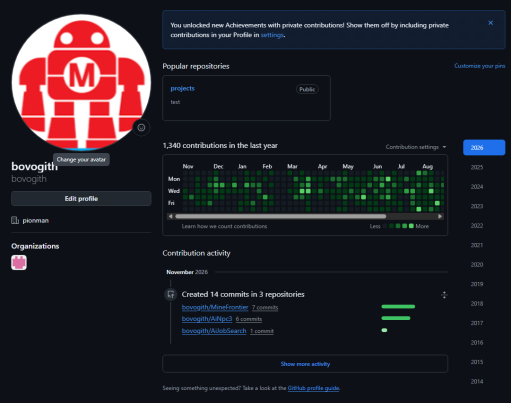
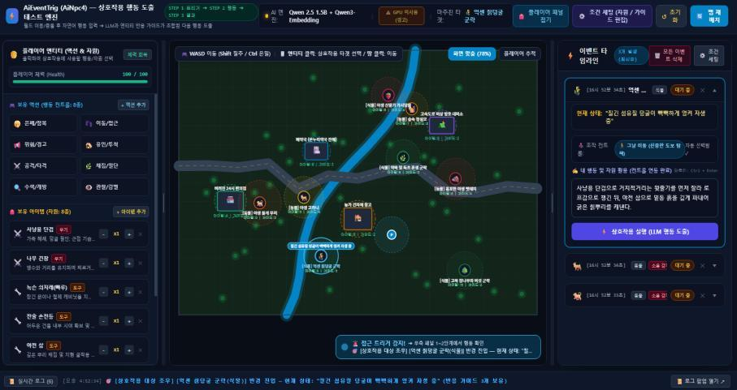
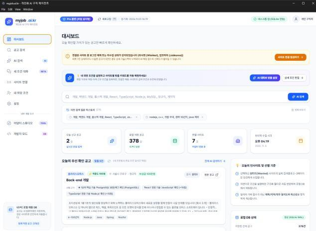
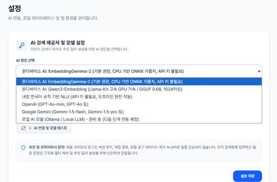
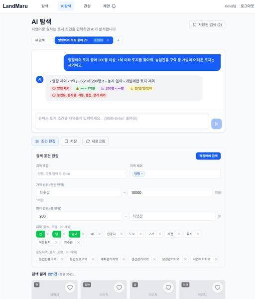
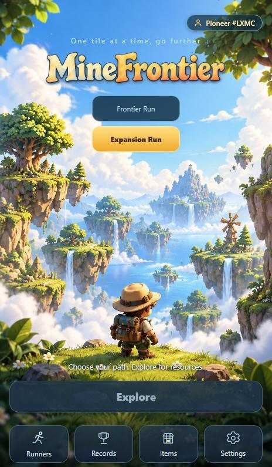
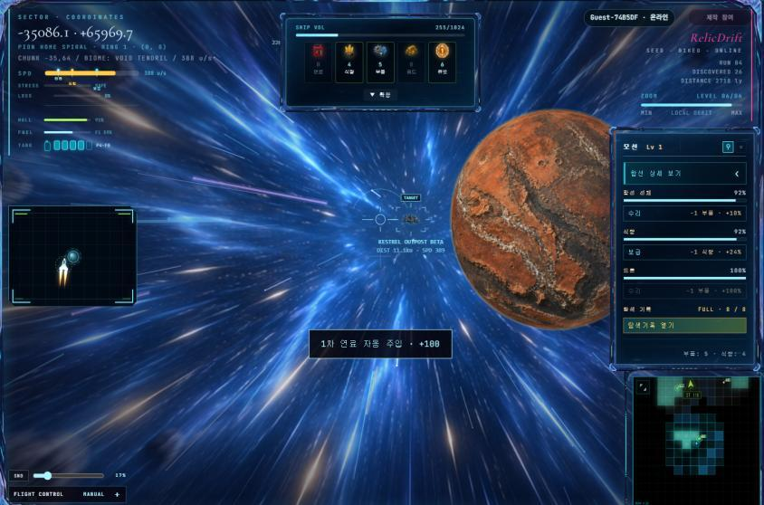
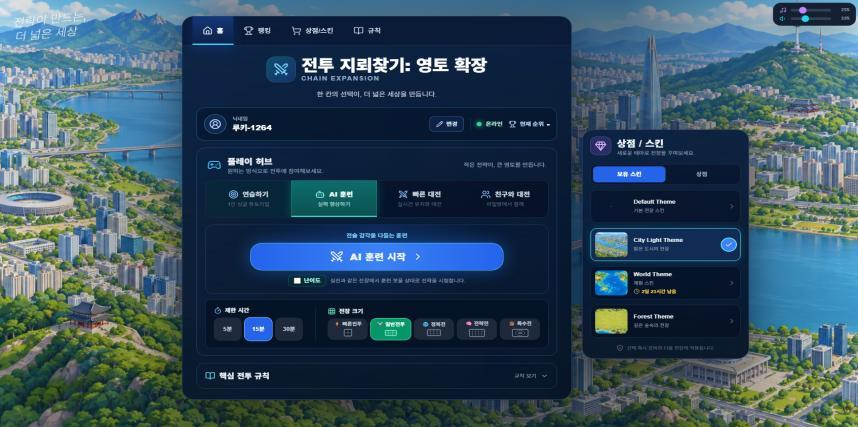
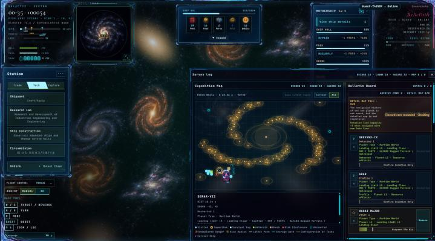
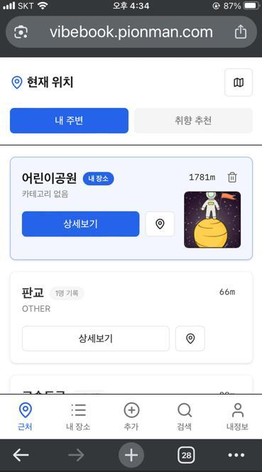
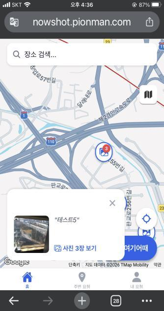
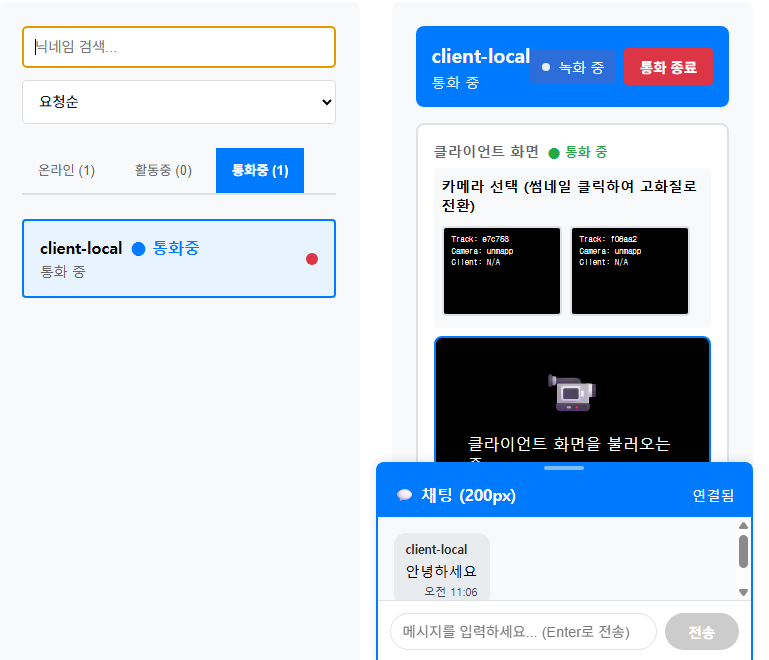
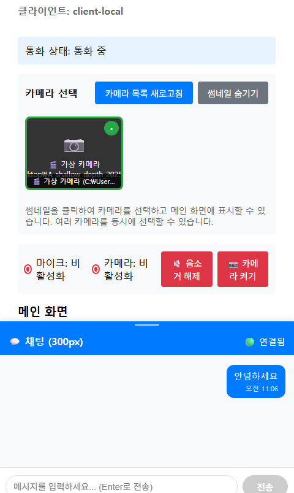
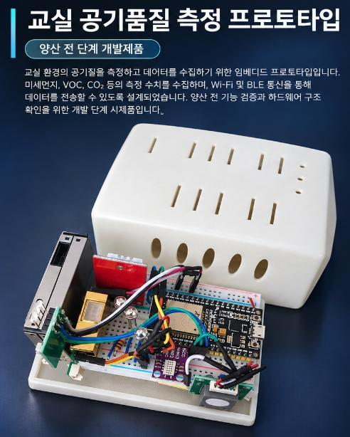
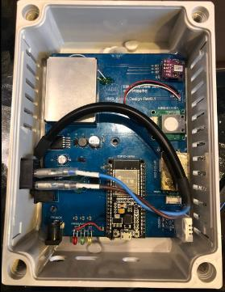
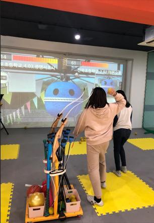
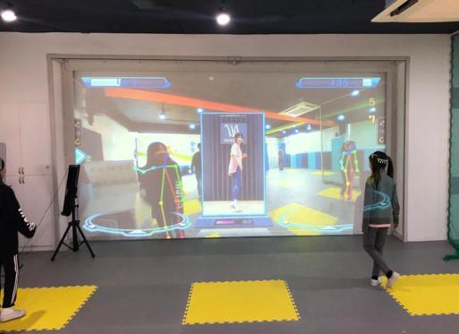
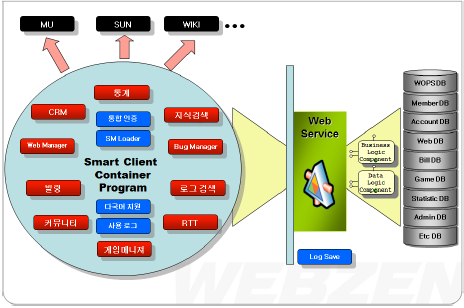
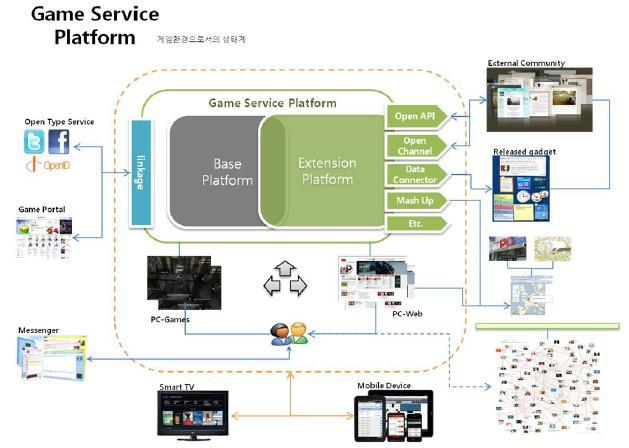